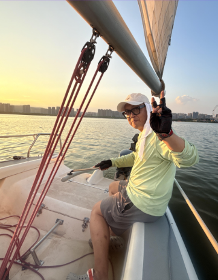

PNW AYSC
Pacific Northwest Asian Youth Sailing Club
Meet the coaches who make it all happen
Hi, I'm Eddie. I've been sailing for about 4–5 years and I'm excited to be coaching the kids at PNW AYSC. I started this club because I noticed there aren't a lot of Asian kids in the sailing scene, and I wanted to help change that — giving more kids in our community a real shot to get out on the water and love it the way I do.

Hi, I'm William. I learned to sail right here in Kirkland, and while I've only been at it for about a year, I've fallen in love with it fast. When I'm not on the water, I run a business that provides food service to local schools, so I'm no stranger to working with kids. I'm excited to bring that same energy to PNW AYSC and help build something new for our community.
